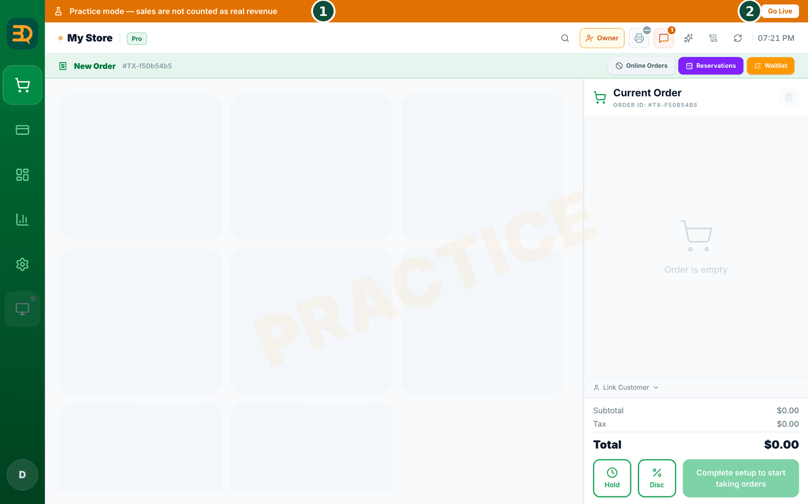
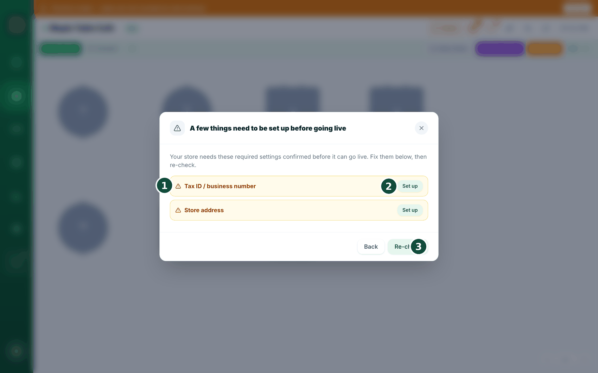
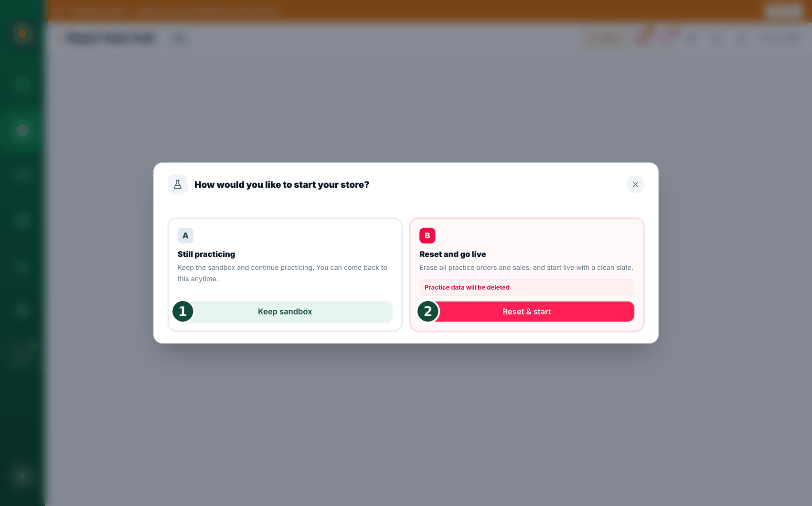

25Puesta en marcha
Así se pasa del modo de práctica a la venta real. Usted empieza en modo de práctica. Toque lo que quiera, registre pedidos de prueba: nada cuenta como ingresos reales. Cuando esté listo para vender de verdad, pase a live.
Dónde encontrarlo
Mientras está en modo de práctica, hay una franja en la parte superior de la pantalla: "Practice mode — sales are not counted as real revenue". Toque Go Live al lado.

Hágalo en la caja principal. La puesta en marcha solo se puede hacer desde su caja registradora principal: "Only the main POS can switch the store to live. Open this on your main register."
Complete la lista de verificación

- Si todavía falta algo, primero aparece una lista de verificación: nombre de la tienda, país, moneda, zona horaria, tipo de negocio, tasa de impuesto confirmada, número de identificación fiscal, dirección de la tienda y al menos un producto en el menú.
- Toque Set up (Configurar) en una línea para ir directamente a ese ajuste. Cuando los haya completado, toque Re-check.
¿Por qué bloquearlo? Si empieza a vender con la tasa de impuesto o la zona horaria todavía en blanco, los ingresos de su primer día se registran mal, y eso es mucho más difícil de corregir después. Por eso le pedimos que lo confirme una vez, desde el principio.
Elija cómo empezar

- Luego elija una de tres opciones: Still practicing (seguir practicando, no cambia nada), Reset and go live (borrar los registros de práctica y empezar de cero) o Already in business (conservar todo lo registrado hasta ahora e indicarnos qué día abrió realmente).
- Aparece una pantalla de confirmación más que muestra exactamente qué se elimina y qué se conserva.
- Para las dos opciones reales, BrewDesk le envía por correo un código que debe escribir: la puesta en marcha no tiene vuelta atrás, así que comprobamos que realmente sea usted.
- Listo. Sus ventas ahora cuentan oficialmente y los clientes pueden pedir desde sus teléfonos.
¿Ya cobró dinero real? Entonces desaparece "Still practicing". Si BrewDesk ve pedidos reales, pagos reales con tarjeta o días cerrados en su cuenta, esa tarjeta se oculta y se le indica: "Real sales detected — 'Keep practicing' is not available. Choose Reset (B) or Keep data & go live (C).". Un panel le muestra lo que encontró: cuántos pedidos, cuánto dinero, si se usaron tarjetas. Hacer pasar por práctica los ingresos reales de ayer es la forma de que las cuentas dejen de cuadrar.
Su menú, impuestos, impresoras, personal y ajustes de Stripe se conservan. Aunque elija "Reset & start", lo único que se elimina son los pedidos, las ventas y los registros de cierre de práctica.
Es bueno saberlo: mientras está en modo de práctica, los clientes no pueden hacer pedidos reales por QR ni en línea. Su pantalla dice "This store is in practice mode".
Temas relacionados
¿Necesita más ayuda?
Puede enviar un ticket de soporte desde la app en Settings › Support.